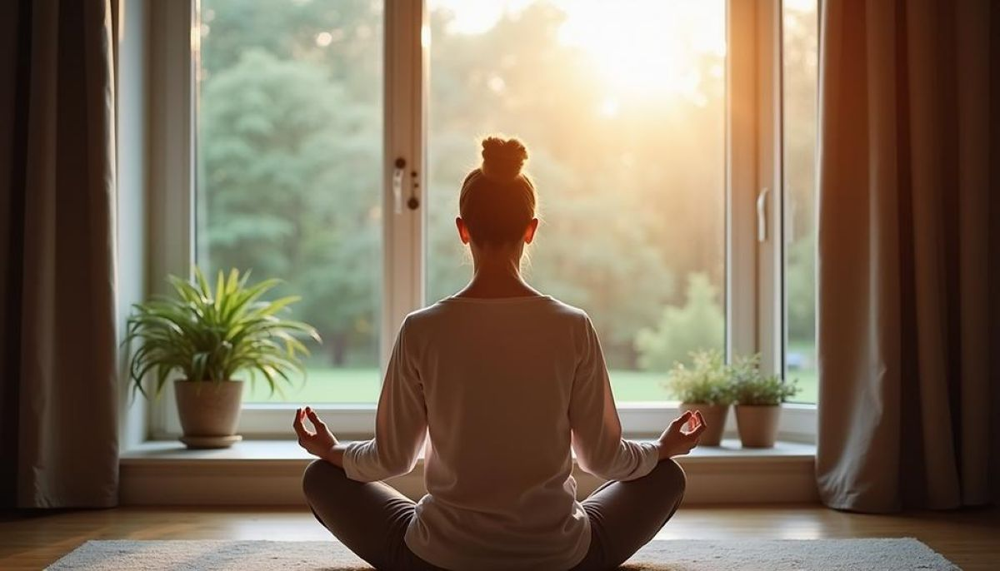

There’s a point in every day when the pace of doing begins to take over — the lists, the responsibilities, the small frictions that accumulate without asking permission. Most of us move through that momentum without noticing how much it pulls us away from ourselves. But there is a simple practice that can interrupt that drift: the deliberate act of stepping out of the noise.
Some call it meditation. Some call it prayer. Some simply close their eyes for a moment and breathe. The name doesn’t matter nearly as much as the pause — the shift from outward motion to inward stillness. It is a way of giving yourself a few minutes in which you are not answering, fixing, producing, scrolling, or moving on to the next thing.

What Meditation Means Here
Meditation is not one single thing, and there is no requirement that it look a certain way. Different traditions and practices use different points of attention — the breath, a sound, a repeated word or phrase, a visual image, or simply the experience of being present. Mindfulness is related, but it is not the same word for every form of meditation; it is often described as paying attention to the present moment with an attitude of openness rather than judgment.
That distinction matters because I don't want this to become another thing you are supposed to do correctly. There is enough of that already. You do not need a special cushion, a perfect room, a particular posture, or a mind that suddenly becomes wonderfully empty. You can sit in a chair. You can sit on the edge of the bed. You can stand quietly at the kitchen window before the day gets moving. The practice begins when you decide that, for a few minutes, you are going to stop and notice that you are here.
Start With the Breath
If you don't know where to begin, begin with breathing. Don't force it into some special pattern. Let the breath be ordinary. Notice the inhale. Notice the exhale. Feel the chair beneath you, the floor beneath your feet, or the movement of your chest. When your mind wanders — and it will — notice that too, and gently return to the breath.
That returning is part of the practice. The goal is not to win a contest against your own thoughts. A grocery list may appear. An email may come to mind. You may suddenly remember something you forgot to do yesterday. Let it pass without turning the quiet moment into another problem to solve. Come back to the breath. Come back to the room. Come back to yourself.
Prayer, Meditation, or Simply Being Still
For some people, quiet time naturally becomes prayer. For others, it becomes a way of listening for a sense of something larger than themselves. That might mean turning toward God, toward a spiritual tradition, toward a sacred text, or toward a personal sense of a higher power. Someone else may sit in exactly the same quiet room without any religious or spiritual element at all.
Those approaches do not have to compete. Meditation and prayer are not identical practices, but they can share the same doorway: the decision to stop, become quiet, and give your attention to something other than the constant demands of the day. What happens in that quiet is personal. There is room for faith here, and there is room for people who simply need five quiet minutes.
A Five-Minute Pause
Five minutes is enough to begin. Find a reasonably quiet place and sit comfortably. Put the phone somewhere you won't automatically reach for it. Close your eyes if that feels comfortable, or soften your gaze. Let your breathing settle into its natural rhythm.
- Notice where you are and let your body become still.
- Bring your attention to the natural movement of your breath.
- When thoughts arrive, notice them without having to follow them.
- Return to the breath, a quiet word, a prayer, a sound, or another point of attention that feels meaningful to you.
- When the five minutes are over, open your eyes slowly and return to the day.
There is nothing dramatic about it. That is part of the point. The practice is small enough to fit between two obligations, before coffee, after lunch, at the end of the workday, or before bed. Over time, the pause can become less something you remember to do and more something you recognize you need.
Sound Can Help
Sound can be another doorway into stillness. Sometimes silence is exactly what we need; sometimes silence gives the mind too much room to keep talking. A steady piece of music or an atmospheric meditation track can give attention somewhere gentle to rest.
I often listen to La Boier on YouTube — a long, atmospheric meditation track that feels like it’s made of breath and earth. There’s something grounding in it, something that settles low in the chest and reminds me of the quiet places inside myself. The tones are slow and steady, almost like a heartbeat, and they create a sense of being held rather than distracted.
Recommended Listening
This is the version I return to most often for daily grounding:
The Point Is the Pause
You don't have to become a different person in five minutes. You don't have to empty your mind, reach some perfect state of calm, or emerge with all the answers. Sometimes the most useful thing that happens is simply that you stop adding more noise.
Even five minutes — eyes closed, hands still, breath steady — can change the shape of the day. It is a small ritual, but one that makes everything else feel a little more spacious, a little more intentional, and a little more human.